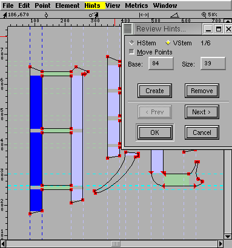

The Hints Menu
This menu is only present in the outline glyph view and the
font view.
A more detailed description of the
hinting UI.
- AutoHint
-
The Auto Hint command causes FontForge to throw away any
existing hints for the glyph and guess an new ones. In the
outline view this operates on the current glyph, in the
font view it operates on all selected glyphs.
FontForge will do a better job hinting a font if you have
previously set the BlueValues, StdVW and StdHW fields in
Element->Font
Info->PS Private. These in turn depend on the hints
so it is best to autohint the entire font, then set the
above values, and then autohint the font again.
If you wish to use AutoInstr below you should first
AutoHint your font with File->Preferences->PS
Hints->Detect Diagonal Stems enabled.
- Hint Substitution Pts
- In the font view this figures substitution points for all
selected glyphs. In the outline glyph view, this figures
substitution points for the current glyph using the current
hint set.
- Auto Counter
- Attempt to figure out counter groups for the selected
glyphs (font view) or the current glyph (outline glyph
view).
- Don't
AutoHint
-
Tells FontForge not to do any implicit hinting on the
selected glyphs. (FontForge will normally perform an
autohint on a glyph if the glyph's contours have changed
since it was last hinted and the user has not explicitly
changed the hints). The user may turn this flag off by
invoking AutoHint explicitly.
In the outline glyph view, behavior is a bit more
complicated. This command will toggle the current setting
of the "Don't AutoHint" flag. If the flag is currently on
the menu entry will be checked.
- AutoInstr
-
The Auto Instr command is only available in quadratic fonts
and is used to generate truetype instructions. It is
designed to produce instructions based on PostScript
information, so please insure that all glyphs are correctly
hinted and that the PostScript private dictionary
has been filled in. (I know the instructions aren't used by
PostScript, but the information needed to generate the
instructions is clearly expressed in the PostScript data).
If you are using AutoHint to generate hints, please
insure that the diagonal hint preference item is turned on
(File->Preferences->PS
Hints->Detect Diagonal Stems)
- Edit
Instructions...
-
Only available in the outline and font views, and only in
quadratic fonts. This dialog
shows any truetype instructions associated with this glyph,
and allows you to edit them.
Note there are some glyphs for which you cannot write
instructions if they contain references that cannot be
represented in TrueType. If a glyph contains a reference
that is scaled by a factor of 2 or more, or if a glyph
contains both a reference and a contour then you may not
generate instructions for it. You can either:
- Unlink all references
- (in the case of a glyph with references and contours)
Place all the contours into a new glyph and make a
reference to that glyph. (So the composite glyph will now
contain only references).
- Debug...
- Only available in the outline view, and only if you have
linked with a version of freetype with the bytecode
interpreter and only in quadratic fonts. This allows you to
debug truetype
programs.
- Edit fpgm...
- Only available in the font view, and only in quadratic
fonts. This dialog shows any
truetype instructions in the 'fpgm' table, and allows you to
edit them.
- Edit prep...
- Only available in the font view, and only in quadratic
fonts. This dialog shows any
truetype instructions in the 'prep' table, and allows you to
edit them.
- Edit cvt...
- Only available in the font view, and only in quadratic
fonts. This dialog shows the
initial values in the 'cvt ' table, and allows you to edit
them. You can also add a brief comment to describe what each
entry is used for.
- Suggest Deltas...
- Brings up a dialog which
will help you search for places where truetype delta
instructions might be useful.
- Remove Instr
Tables
- If the font contains a 'fpgm', 'prep', 'cvt ' or 'maxp'
table, then this command will remove them. This should be
done in conjunction with Hints->Clear Instructions, otherwise
any remaining instructed glyphs will fail to work.
- Clear Hints
- Clears all hints in all selected glyphs.
- Clear
Instructions
- Clears any truetype instructions associated with the
selected glyphs.
- Clear HStem
- Removes all Horizontal Stem hints from the current
glyph.
- Clear VStem
- Removes all Vertical Stem hints.
- Clear DStem
- Removes all Diagonal Stem hints.
- Add HHint
- If there are two points selected (exactly two) and if
they have different y positions, then this will create a
Horizontal Stem Hint starting at the lower one of the two
going up to the upper one.
- Add VHint
- If there are two points selected (exactly two) and if
they have different x positions, then this will create a
Vertical Stem Hint starting at the leftmost one of the two
going right to the rightmost one.
- Add DHint
- If there are exactly 4 points selected and they can
describe a diagonal stem hint then this menu item will be
active and will add it.
- Create HHint
- Brings up a dialog allowing you to specify exactly where
and how wide you want a Horizontal Stem Hint.
- Create VHint
- Brings up a dialog allowing you to specify exactly where
and how wide you want a Vertical Stem Hint.
- Review Hints
- Brings up a dialog allowing you to examine (and modify)
all horizontal/vertical stem hints (not diagonal). The
currently active hint is picked out in either dark blue or
dark green.
- HStem
- Brings up a dialog
displaying a histogram of the horizontal stem widths of all
selected glyphs.
- VStem
- Brings up a dialog
displaying a histogram of the vertical stem widths of all
selected glyphs.
- BlueValues
- Brings up a dialog
displaying a histogram of the vertical maxima and minima of
all selected glyphs.
Other menus
-- Prev -- TOC -- Next
--